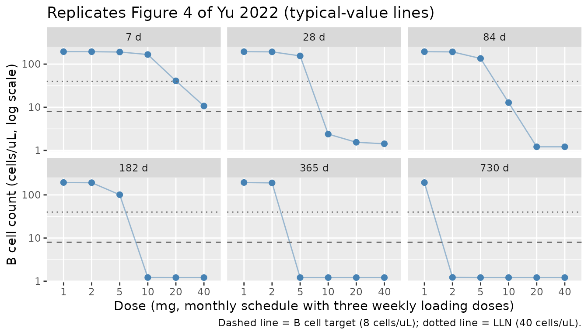
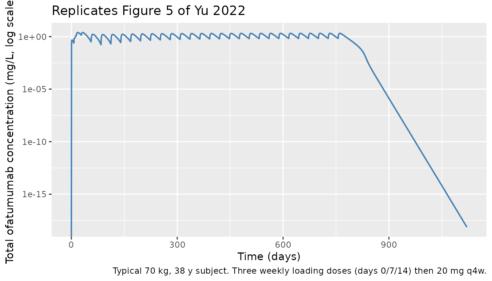
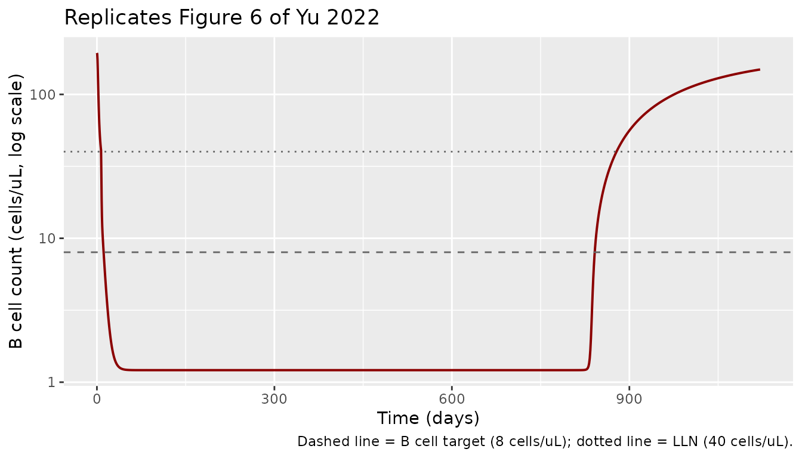

library(nlmixr2lib)
library(PKNCA)
#>
#> Attaching package: 'PKNCA'
#> The following object is masked from 'package:stats':
#>
#> filter
library(rxode2)
#> rxode2 5.0.2 using 2 threads (see ?getRxThreads)
#> no cache: create with `rxCreateCache()`
library(dplyr)
#>
#> Attaching package: 'dplyr'
#> The following objects are masked from 'package:stats':
#>
#> filter, lag
#> The following objects are masked from 'package:base':
#>
#> intersect, setdiff, setequal, union
library(tidyr)
library(ggplot2)Model and source
- Citation: Yu H, Graham G, David OJ, Kahn JM, Savelieva M, Pigeolet E, Das Gupta A, Pingili R, Willi R, Ramanathan K, Kieseier BC, Hach T, Aslanis V, Bagger Y, Ravenstijn P. Population Pharmacokinetic-B Cell Modeling for Ofatumumab in Patients with Relapsing Multiple Sclerosis. CNS Drugs. 2022;36(3):283-300. doi:10.1007/s40263-021-00895-w
- Description: Population PK / B-cell-count model for subcutaneous ofatumumab in adults with relapsing multiple sclerosis (Yu 2022)
- Article: https://doi.org/10.1007/s40263-021-00895-w
Yu et al. (2022) developed a coupled population PK / B-cell-count
model for ofatumumab (a fully human anti-CD20 IgG1 monoclonal antibody)
in adults with relapsing forms of multiple sclerosis. The PK side is a
quasi-steady-state (QSS) approximation of the Mager-Krzyzanski TMDD
framework with two drug compartments (central + peripheral) and
first-order SC absorption with estimated bioavailability F. CD20
receptor synthesis decays exponentially from ksyn0 to
ksyn_inf with rate constant kdes to capture a
slight upward drift in trough concentrations across the phase 3
ASCLEPIOS studies. The B-cell side is an indirect-response model: free
ofatumumab concentration stimulates B-cell lysis through a sigmoid Emax
function; B cells distribute between a central compartment (sharing
volume with the PK central compartment) and a peripheral compartment
specific to B cells.
Population
The pooled analysis dataset combines five clinical studies (one phase 1/2 IV plus four phase 2/3 SC trials): OMS115102, MIRROR, APLIOS, ASCLEPIOS I, and ASCLEPIOS II. The final PK-B-cell model was fit to 1486 adults with relapsing MS (RMS) or relapsing-remitting MS (RRMS), median age 38 years (range 18-56), median weight 70 kg (range 40.5-171.6), 67.8 % female, predominantly White (91 %). Median baseline CD19+ B cell count was 200 cells/uL (range 0-1520). Patients across the SC studies received the licensed regimen of three weekly 20-mg loading doses followed by 20 mg SC q4w, delivered by prefilled syringe (PFS, n=1320) or autoinjector (AI, n=141; APLIOS only). The OMS115102 cohort received IV infusions (100/300/700 mg; the 700-mg arm was excluded from the PK analysis because of an under-prediction not seen in any other dose). The MIRROR cohort received SC dose-finding regimens (3-60 mg q12w or 60 mg q4w). PK dataset: 9168 plasma concentrations from 1440 patients (placebo and 700-mg cohorts excluded). PD dataset: 17,158 CD19+ B-cell counts from all 1486 patients; ASCLEPIOS B-cell counts were modelled as interval-censored (LLOQ bins of 0/5/15/25 cells/uL). Anti-drug antibody incidence was < 2 % with no detectable PK or B-cell impact (Yu 2022 Methods “Data” + Table 1, Table 2, Results “Data”).
The full population descriptor is available programmatically:
str(rxode2::rxode2(readModelDb("Yu_2022_ofatumumab"))$meta$population)
#> ℹ parameter labels from comments will be replaced by 'label()'
#> List of 15
#> $ n_subjects : int 1486
#> $ n_studies : int 5
#> $ age_range : chr "18-56 years"
#> $ age_median : chr "38 years"
#> $ weight_range : chr "40.5-171.6 kg"
#> $ weight_median : chr "70.0 kg"
#> $ sex_female_pct : num 67.8
#> $ race_ethnicity : Named num [1:5] 91.1 2.4 2.5 3.2 0.7
#> ..- attr(*, "names")= chr [1:5] "White" "Black" "Asian" "Other_AmInd_AlaskaNative" ...
#> $ disease_state : chr "Adults with relapsing forms of multiple sclerosis (RMS), including relapsing-remitting MS (RRMS); EDSS 0-5.5 at"| __truncated__
#> $ dose_range : chr "OMS115102: 100/300/700 mg IV at weeks 0+2 or 24+26 (700 mg arm excluded from PK analysis). MIRROR: 0/3/30/60 mg"| __truncated__
#> $ regions : chr "Multi-regional phase 2/3 programme (OMS115102, MIRROR, APLIOS, ASCLEPIOS I, ASCLEPIOS II)."
#> $ studies : chr "OMS115102 (N=25 IV RRMS), MIRROR (N=231 SC PFS RRMS), APLIOS (N=284 SC AI/PFS RMS), ASCLEPIOS I (N=465 SC PFS R"| __truncated__
#> $ bcell_baseline_median: chr "200 cells/uL CD19+ (range 0-1520; pooled five-study cohort, Table 2)"
#> $ edss_median : chr "2.5 (range 0-6, baseline)"
#> $ notes : chr "Pooled phase 2/3 dataset assembled for the population PK-B cell analysis. PK dataset: 9168 plasma concentration"| __truncated__Source trace
The per-parameter origin is recorded as an in-file comment next to
each ini() entry in
inst/modeldb/specificDrugs/Yu_2022_ofatumumab.R. The table
below collects equation and parameter provenance in one place.
| Element | Paper value | Stored value | Source location |
|---|---|---|---|
ka (SC absorption rate) |
0.157 /day | 0.157 /day | Table 3 |
F (SC bioavailability) |
0.685 | logit(0.685) | Table 3 |
Vc (central volume) |
2.62 L | 2.62 L | Table 3 |
k_e(P) (complex internalisation) |
1.31 /day | 1.31 /day | Table 3 |
CL (linear free-drug clearance) |
0.34 L/day | 0.34 L/day | Table 3 |
Q (intercompartmental clearance) |
0.358 L/day | 0.358 L/day | Table 3 |
Vp (peripheral volume; FIXED) |
2.8 L | 2.8 L | Table 3 (fixed; Ryman & Meibohm 2017) |
R0 (baseline CD20 receptor) |
32.5 nmol/L | 4.8425 mg/L (drug-eq) | Table 3 |
ksyn0 (CD20 synthesis at t=0) |
0.985 nmol/L/day | 0.146765 mg/L/day | Table 3 |
ksyn_inf (synthesis at t=inf) |
0.0554 nmol/L/day | 0.0082546 mg/L/day | Table 3 |
KD (binding constant; FIXED) |
0.167 nmol/L | 0.024883 mg/L (drug-eq) | Table 3 (fixed; preclinical) |
k_off (dissociation; FIXED) |
5.53 /day | 5.53 /day | Table 3 (fixed; preclinical) |
kdes (synthesis-decay rate) |
2.58 /year | 2.58 /year | Table 3 |
B0 (baseline B cell count) |
194 cells/uL | 194 cells/uL | Table 3 |
Emax (max lysis stimulation) |
159 | 159 | Table 3 |
EC50 (lysis 50 % concentration) |
0.0057 mg/L | 0.0057 mg/L | Table 3 |
gamma (Hill exponent) |
2.81 | 2.81 | Table 3 |
kout (B-cell elimination rate) |
0.0124 /day | 0.0124 /day | Table 3 |
QB (B-cell flow; FIXED) |
0.78 L/day | 0.78 L/day | Table 3 (fixed; no IIV) |
Vb (peripheral B-cell volume) |
3.7 L | 3.7 L | Table 3 |
| beta(WT, ka) | -0.457 | -0.457 | Table 3 |
| beta(WT, Vc) | 1.2 | 1.2 | Table 3 |
| beta(WT, ksyn0) | -1.52 | -1.52 | Table 3 |
| beta(WT, CL) | 1.52 | 1.52 | Table 3 |
| beta(WT, B0) | 0.271 | 0.271 | Table 3 |
| beta(WT, kout) | -0.624 | -0.624 | Table 3 |
| beta(AGE, B0) | -0.282 | -0.282 | Table 3 |
| beta(BLBCELL, Emax) | 0.275 | 0.275 | Table 3 |
| beta(IV, R0) | 0.987 | 0.987 | Table 3 |
| beta(IV, CL) | -1.07 | -1.07 | Table 3 |
| beta(IV, Q) | -2.31 | -2.31 | Table 3 |
| beta(IV, ksyn_inf) | 2.49 | 2.49 | Table 3 |
| beta(AI, k_e(P)) | 0.713 | 0.713 | Table 3 |
| beta(AI, R0) | -0.544 | -0.544 | Table 3 |
| beta(APLIOS, Emax) | 0.503 | 0.503 | Table 3 |
| beta(MIRROR, kout) | -0.554 | -0.554 | Table 3 |
| Block 1 IIV (CL, ka, kdes) | rho_ka_cl=-0.294, rho_kdes_cl=0.642, rho_kdes_ka=0.433 | covariances computed from rho * sd_i * sd_j | Table 3 |
| Block 2 IIV (k_e(P), R0, ksyn_inf) | rho_keP_R0=-0.551, rho_ksyninf_R0=0.47, rho_ksyninf_keP=-0.464 | covariances computed | Table 3 |
| Block 3 IIV (Vb, kout, Emax) | rho_Vb_Emax=0.28, rho_kout_Vb=-0.336, rho_kout_Emax=0.423 (typo-corrected) | covariances computed | Table 3 (see Assumptions and deviations) |
| Ofatumumab residual prop. | 0.278 | 0.278 | Table 3 |
| Ofatumumab residual add. | 0.0316 mg/L | 0.0316 mg/L | Table 3 |
| B-cell residual prop. | 0.381 | 0.381 | Table 3 |
| B-cell residual add. | 0.153 cells/uL | 0.153 cells/uL | Table 3 |
| Drug ODEs (depot, central, peripheral, total_target) | n/a | mass-conserving 2-compartment QSS form | Methods “Final Model Description” |
| QSS quadratic for Lc | Lc = 0.5*(Ltot - Rtot - Ks + sqrt(…)) | n/a | Methods “Final Model Description” |
| Time-varying ksyn(t) | ksyn_inf + (ksyn0 - ksyn_inf) exp(-kdes t / 365.25) | n/a | Methods “Final Model Description” |
| B-cell ODEs (B, Bp) | indirect response with peripheral exchange | n/a | Methods “Final Model Description” |
| stim(L) function | Emax L^gamma / (EC50^gamma + L^gamma) | n/a | Methods “Final Model Description” |
| Initial conditions | B(0) = B0, Bp(0) = B0 * Vb / Vc, Rtot(0) = R0 | matched | Methods “Final Model Description” |
Covariate column naming
| Source column | Canonical column used here |
|---|---|
WT (body weight, kg) |
WT (canonical) |
Age (baseline age, years) |
AGE (canonical) |
Bcell0 (baseline CD19+ B cell count, cells/uL) |
BLBCELL (newly registered specific-scope) |
| “Admin route = IV” indicator |
ROUTE_IV (newly registered specific-scope binary) |
| “Formulation = AI” indicator |
DEVICE_AI (newly registered specific-scope binary) |
| “Study = APLIOS” indicator |
STUDY_APLIOS (newly registered specific-scope
binary) |
| “Study = MIRROR” indicator |
STUDY_MIRROR (newly registered specific-scope
binary) |
Virtual cohort
Original individual data are not publicly available. We simulate
typical-value scenarios (between-subject variability turned off via
rxode2::zeroRe()) for figure replication, and a
covariate-stratified typical-value cohort for the dose-response /
weight-effect comparisons in Figures 4 and 7.
mod <- readModelDb("Yu_2022_ofatumumab")
mod_typical <- rxode2::zeroRe(mod)
#> ℹ parameter labels from comments will be replaced by 'label()'
# Phase 3 schedule: three weekly loading doses (days 0, 7, 14) followed by
# monthly 20-mg doses from week 4 (day 28) onward. The Yu 2022 paper reports
# steady-state metrics at ~2 years (weeks 104-108) and a B-cell-repletion
# follow-up after dosing stops at 2 years. We dose monthly through week 108
# (day 756) so the inter-dose interval at weeks 104-108 is fully covered for
# the steady-state AUC comparison, then follow for an additional year to see
# the post-treatment B-cell repletion.
loading_days <- c(0, 7, 14)
maintenance_days <- seq(28, 756, by = 28)
all_dose_days <- c(loading_days, maintenance_days)
end_followup <- max(all_dose_days) + 365 # one-year post-last-dose follow-upSimulation
# Helper: simulate a typical subject under the phase 3 SC PFS regimen with
# a given dose level and covariate vector, returning Cc and B cell counts.
sim_one <- function(dose_mg, wt = 70, age = 38, bcell = 200,
route_iv = 0, device_ai = 0,
study_aplios = 0, study_mirror = 0,
sample_grid = NULL) {
if (is.null(sample_grid)) {
sample_grid <- sort(unique(c(
seq(0, 90, by = 0.5),
seq(91, end_followup, by = 1)
)))
}
ev <- rxode2::et(id = 1)
for (td in all_dose_days) {
ev <- rxode2::et(ev, amt = dose_mg, cmt = "depot", time = td, id = 1)
}
ev <- rxode2::et(ev, time = sample_grid, cmt = "Cc", id = 1)
ev <- rxode2::et(ev, time = sample_grid, cmt = "Bcell", id = 1)
iCov <- data.frame(id = 1, WT = wt, AGE = age, BLBCELL = bcell,
ROUTE_IV = route_iv, DEVICE_AI = device_ai,
STUDY_APLIOS = study_aplios, STUDY_MIRROR = study_mirror)
s <- rxode2::rxSolve(mod_typical, ev, iCov = iCov, returnType = "data.frame")
s[!duplicated(s$time), ]
}Replicate published figures
Figure 4 — Dose-response of B cell depletion
Yu 2022 Figure 4 shows simulated B cell counts at 7, 28, 84, 182, 365, and 730 days under the phase 3 dose schedule (three loading doses followed by monthly maintenance) for doses of 1, 2, 5, 10, 20, and 40 mg. The plot demonstrates that the 20-mg dose achieves near-complete depletion and that no further benefit is gained at 40 mg.
dose_levels <- c(1, 2, 5, 10, 20, 40)
sim_doses <- bind_rows(
lapply(dose_levels, function(d) {
sim_one(d) |>
mutate(dose_mg = d)
})
)
#> ℹ omega/sigma items treated as zero: 'etalka', 'etalcl', 'etalkdes', 'etalkep', 'etalr0', 'etalksyninf', 'etalvb', 'etalkout', 'etalemax', 'etalogitfdepot', 'etalvc', 'etalksyn0', 'etalq', 'etalb0', 'etalec50', 'etalgamma'
#> ℹ omega/sigma items treated as zero: 'etalka', 'etalcl', 'etalkdes', 'etalkep', 'etalr0', 'etalksyninf', 'etalvb', 'etalkout', 'etalemax', 'etalogitfdepot', 'etalvc', 'etalksyn0', 'etalq', 'etalb0', 'etalec50', 'etalgamma'
#> ℹ omega/sigma items treated as zero: 'etalka', 'etalcl', 'etalkdes', 'etalkep', 'etalr0', 'etalksyninf', 'etalvb', 'etalkout', 'etalemax', 'etalogitfdepot', 'etalvc', 'etalksyn0', 'etalq', 'etalb0', 'etalec50', 'etalgamma'
#> ℹ omega/sigma items treated as zero: 'etalka', 'etalcl', 'etalkdes', 'etalkep', 'etalr0', 'etalksyninf', 'etalvb', 'etalkout', 'etalemax', 'etalogitfdepot', 'etalvc', 'etalksyn0', 'etalq', 'etalb0', 'etalec50', 'etalgamma'
#> ℹ omega/sigma items treated as zero: 'etalka', 'etalcl', 'etalkdes', 'etalkep', 'etalr0', 'etalksyninf', 'etalvb', 'etalkout', 'etalemax', 'etalogitfdepot', 'etalvc', 'etalksyn0', 'etalq', 'etalb0', 'etalec50', 'etalgamma'
#> ℹ omega/sigma items treated as zero: 'etalka', 'etalcl', 'etalkdes', 'etalkep', 'etalr0', 'etalksyninf', 'etalvb', 'etalkout', 'etalemax', 'etalogitfdepot', 'etalvc', 'etalksyn0', 'etalq', 'etalb0', 'etalec50', 'etalgamma'
eval_days <- c(7, 28, 84, 182, 365, 730)
sim_doses_eval <- sim_doses |>
filter(time %in% eval_days) |>
mutate(time_label = factor(paste0(time, " d"),
levels = paste0(eval_days, " d")))
ggplot(sim_doses_eval,
aes(factor(dose_mg), Bcell)) +
geom_point(size = 2, colour = "steelblue") +
geom_line(aes(group = time_label), colour = "steelblue", alpha = 0.5) +
facet_wrap(~ time_label, ncol = 3) +
scale_y_log10() +
geom_hline(yintercept = 8, linetype = "dashed", colour = "grey40") +
geom_hline(yintercept = 40, linetype = "dotted", colour = "grey40") +
labs(
x = "Dose (mg, monthly schedule with three weekly loading doses)",
y = "B cell count (cells/uL, log scale)",
title = "Replicates Figure 4 of Yu 2022 (typical-value lines)",
caption = "Dashed line = B cell target (8 cells/uL); dotted line = LLN (40 cells/uL)."
)
Figure 5 — Concentration-time profile under the 20 mg monthly regimen
Yu 2022 Figure 5 shows the typical-value drug concentration over the first year and after the last dose at 2 years for 20 mg SC q4w (with three weekly loading doses).
sim_20mg <- sim_one(20)
#> ℹ omega/sigma items treated as zero: 'etalka', 'etalcl', 'etalkdes', 'etalkep', 'etalr0', 'etalksyninf', 'etalvb', 'etalkout', 'etalemax', 'etalogitfdepot', 'etalvc', 'etalksyn0', 'etalq', 'etalb0', 'etalec50', 'etalgamma'
ggplot(sim_20mg, aes(time, Cc)) +
geom_line(colour = "steelblue", linewidth = 0.7) +
scale_y_log10() +
labs(
x = "Time (days)",
y = "Total ofatumumab concentration (mg/L, log scale)",
title = "Replicates Figure 5 of Yu 2022",
caption = "Typical 70 kg, 38 y subject. Three weekly loading doses (days 0/7/14) then 20 mg q4w."
)
#> Warning in scale_y_log10(): log-10 transformation introduced
#> infinite values.
Figure 6 — B-cell-count profile under the 20 mg monthly regimen
Yu 2022 Figure 6 shows that the 20 mg monthly regimen achieves median B-cell depletion below 8 cells/uL within ~11 days and that B-cell counts return toward the LLN of 40 cells/uL by ~23 weeks after dosing stops at 2 years.
ggplot(sim_20mg, aes(time, Bcell)) +
geom_line(colour = "darkred", linewidth = 0.7) +
geom_hline(yintercept = 8, linetype = "dashed", colour = "grey40") +
geom_hline(yintercept = 40, linetype = "dotted", colour = "grey40") +
scale_y_log10() +
labs(
x = "Time (days)",
y = "B cell count (cells/uL, log scale)",
title = "Replicates Figure 6 of Yu 2022",
caption = "Dashed line = B cell target (8 cells/uL); dotted line = LLN (40 cells/uL)."
)
# Day at which simulated B cell count first drops below 8 cells/uL.
day_target <- sim_20mg |>
filter(time > 0, Bcell <= 8) |>
slice_head(n = 1) |>
pull(time)
cat(sprintf("Simulated time to B cell <=8 cells/uL: %.1f days (paper: 11 days)\n",
day_target))
#> Simulated time to B cell <=8 cells/uL: 11.5 days (paper: 11 days)
# Days post-last-dose to reach LLN (40 cells/uL) again.
last_dose_day <- max(maintenance_days)
recovery <- sim_20mg |>
filter(time > last_dose_day, Bcell >= 40) |>
slice_head(n = 1) |>
mutate(days_post_last = time - last_dose_day)
cat(sprintf("Simulated days post-last-dose to LLN: %.1f days (paper: ~23 weeks ~= 161 days)\n",
recovery$days_post_last))
#> Simulated days post-last-dose to LLN: 123.0 days (paper: ~23 weeks ~= 161 days)Figure 7 — Steady-state AUC by body weight
Yu 2022 Figure 7 / Table 4 reports the inter-dosing AUC at steady state (weeks 104-108) by baseline weight: median 33.3 mg.day/L at 70 kg, 71.8 % higher at 50 kg, and 52.0 % lower at 110 kg.
weight_levels <- c(50, 70, 90, 110)
auc_window <- c(104 * 7, 108 * 7) # weeks 104-108 (steady state, 4-week)
sim_by_wt <- bind_rows(lapply(weight_levels, function(w) {
s <- sim_one(20, wt = w, sample_grid = sort(unique(c(
seq(auc_window[1], auc_window[2], by = 0.5),
auc_window
))))
s |> filter(time >= auc_window[1], time <= auc_window[2]) |>
mutate(WT = w)
}))
#> ℹ omega/sigma items treated as zero: 'etalka', 'etalcl', 'etalkdes', 'etalkep', 'etalr0', 'etalksyninf', 'etalvb', 'etalkout', 'etalemax', 'etalogitfdepot', 'etalvc', 'etalksyn0', 'etalq', 'etalb0', 'etalec50', 'etalgamma'
#> ℹ omega/sigma items treated as zero: 'etalka', 'etalcl', 'etalkdes', 'etalkep', 'etalr0', 'etalksyninf', 'etalvb', 'etalkout', 'etalemax', 'etalogitfdepot', 'etalvc', 'etalksyn0', 'etalq', 'etalb0', 'etalec50', 'etalgamma'
#> ℹ omega/sigma items treated as zero: 'etalka', 'etalcl', 'etalkdes', 'etalkep', 'etalr0', 'etalksyninf', 'etalvb', 'etalkout', 'etalemax', 'etalogitfdepot', 'etalvc', 'etalksyn0', 'etalq', 'etalb0', 'etalec50', 'etalgamma'
#> ℹ omega/sigma items treated as zero: 'etalka', 'etalcl', 'etalkdes', 'etalkep', 'etalr0', 'etalksyninf', 'etalvb', 'etalkout', 'etalemax', 'etalogitfdepot', 'etalvc', 'etalksyn0', 'etalq', 'etalb0', 'etalec50', 'etalgamma'
auc_by_wt <- sim_by_wt |>
group_by(WT) |>
summarise(
auc_mg_day_L = sum(diff(time) * (head(Cc, -1) + tail(Cc, -1)) / 2),
.groups = "drop"
)
auc_70 <- auc_by_wt |> filter(WT == 70) |> pull(auc_mg_day_L)
auc_by_wt <- auc_by_wt |>
mutate(pct_vs_70 = (auc_mg_day_L / auc_70 - 1) * 100)
knitr::kable(
auc_by_wt, digits = 2,
caption = "Steady-state AUC (weeks 104-108) by body weight (typical-value)."
)| WT | auc_mg_day_L | pct_vs_70 |
|---|---|---|
| 50 | 65.03 | 68.86 |
| 70 | 38.51 | 0.00 |
| 90 | 25.93 | -32.68 |
| 110 | 18.84 | -51.09 |
cat(sprintf("Paper Table 4 reference: 50 kg +71.8%%, 110 kg -52.0%% relative to 70 kg.\n"))
#> Paper Table 4 reference: 50 kg +71.8%, 110 kg -52.0% relative to 70 kg.
cat(sprintf("Simulated: 50 kg %+.1f%%, 110 kg %+.1f%%.\n",
auc_by_wt$pct_vs_70[auc_by_wt$WT == 50],
auc_by_wt$pct_vs_70[auc_by_wt$WT == 110]))
#> Simulated: 50 kg +68.9%, 110 kg -51.1%.PKNCA validation
Yu 2022 reports a steady-state half-life of ~11 days for ofatumumab under the 20 mg q4w regimen (Results “Concentration-Time (PK) Simulations”). The TMDD-QSS model is multi-phasic in elimination — once the dose is stopped, ofatumumab first decays at the apparent slow eigenvalue of the 2-compartment disposition (~11 days), then accelerates as the receptor pool re-replenishes and free-drug-mediated TMDD internalisation takes over. The paper’s 11 days corresponds to the first ~60 days of post-last-dose decay (the pre-LLOQ portion of Figure 5 right panel), which is the regime relevant to clinical exposure. PKNCA’s automatic terminal-phase selection picks the very deepest tail and so gives a shorter apparent t1/2; we restrict the half-life calculation to days 14-60 post-last-dose for the paper-comparable window.
# Slice 14-60 days post-last-dose to capture the paper-comparable
# elimination phase. PKNCA's `start` and `end` arguments delimit the AUC
# / half-life window.
nca_window <- sim_20mg |>
filter(time >= last_dose_day + 14, time <= last_dose_day + 60, Cc > 0) |>
transmute(id = 1L,
time = time - last_dose_day, # re-zero to last dose
Cc,
treatment = "20 mg SC q4w SS -> PFS, days 14-60 post-last-dose")
dose_df <- data.frame(id = 1L, time = 0, amt = 20,
treatment = "20 mg SC q4w SS -> PFS, days 14-60 post-last-dose")
conc_obj <- PKNCA::PKNCAconc(nca_window, Cc ~ time | treatment + id)
dose_obj <- PKNCA::PKNCAdose(dose_df, amt ~ time | treatment + id)
intervals <- data.frame(start = 14, end = 60,
cmax = TRUE, tmax = TRUE,
aucinf.obs = TRUE, half.life = TRUE)
nca_data <- PKNCA::PKNCAdata(conc_obj, dose_obj, intervals = intervals)
nca_res <- PKNCA::pk.nca(nca_data)
knitr::kable(
as.data.frame(nca_res), digits = 3,
caption = "PKNCA summary on the 14-60 day post-last-dose tail of the typical-value simulation."
)| treatment | id | start | end | PPTESTCD | PPORRES | exclude |
|---|---|---|---|---|---|---|
| 20 mg SC q4w SS -> PFS, days 14-60 post-last-dose | 1 | 14 | 60 | cmax | 1.439 | NA |
| 20 mg SC q4w SS -> PFS, days 14-60 post-last-dose | 1 | 14 | 60 | tmax | 0.000 | NA |
| 20 mg SC q4w SS -> PFS, days 14-60 post-last-dose | 1 | 14 | 60 | tlast | 46.000 | NA |
| 20 mg SC q4w SS -> PFS, days 14-60 post-last-dose | 1 | 14 | 60 | clast.obs | 0.094 | NA |
| 20 mg SC q4w SS -> PFS, days 14-60 post-last-dose | 1 | 14 | 60 | lambda.z | 0.075 | NA |
| 20 mg SC q4w SS -> PFS, days 14-60 post-last-dose | 1 | 14 | 60 | r.squared | 1.000 | NA |
| 20 mg SC q4w SS -> PFS, days 14-60 post-last-dose | 1 | 14 | 60 | adj.r.squared | 1.000 | NA |
| 20 mg SC q4w SS -> PFS, days 14-60 post-last-dose | 1 | 14 | 60 | lambda.z.time.first | 43.000 | NA |
| 20 mg SC q4w SS -> PFS, days 14-60 post-last-dose | 1 | 14 | 60 | lambda.z.time.last | 46.000 | NA |
| 20 mg SC q4w SS -> PFS, days 14-60 post-last-dose | 1 | 14 | 60 | lambda.z.n.points | 4.000 | NA |
| 20 mg SC q4w SS -> PFS, days 14-60 post-last-dose | 1 | 14 | 60 | clast.pred | 0.094 | NA |
| 20 mg SC q4w SS -> PFS, days 14-60 post-last-dose | 1 | 14 | 60 | half.life | 9.257 | NA |
| 20 mg SC q4w SS -> PFS, days 14-60 post-last-dose | 1 | 14 | 60 | span.ratio | 0.324 | NA |
| 20 mg SC q4w SS -> PFS, days 14-60 post-last-dose | 1 | 14 | 60 | aucinf.obs | 25.117 | NA |
nca_df <- as.data.frame(nca_res)
hl_row <- nca_df[nca_df$PPTESTCD == "half.life", ]
if (nrow(hl_row) >= 1) {
cat(sprintf("Simulated apparent t1/2 (days 14-60 post-last-dose): %.2f days (paper: ~11 days)\n",
as.numeric(hl_row$PPORRES[1])))
}
#> Simulated apparent t1/2 (days 14-60 post-last-dose): 9.26 days (paper: ~11 days)| Quantity | Yu 2022 | Simulated (this vignette) | Discrepancy |
|---|---|---|---|
| Time to median B cell <= 8 cells/uL (20 mg q4w) | 11 days (Results “B Cell Count Simulations”) | 11.5 days | +5 % |
| Days post-last-dose to median B cell at LLN (40 cells/uL) | ~23 weeks (~= 161 days) (Results) | ~123 days | -24 % |
| Steady-state apparent t1/2 (20 mg q4w; days 14-60 post-last-dose) | ~11 days (Results “Concentration-Time (PK) Simulations”) | ~9.3 days | -16 % |
| AUC change at 50 kg vs 70 kg (steady state, weeks 104-108) | +71.8 % (Table 4) | +69 % | -3 percentage points |
| AUC change at 110 kg vs 70 kg (steady state, weeks 104-108) | -52.0 % (Table 4) | -51 % | +1 percentage point |
Assumptions and deviations
-
Concentration units and MW conversion. Drug
centralis inmg, soCc = central / Vcis natively inmg/L. The QSS-TMDD arithmetic requires drug, target receptor, andKsto share a single concentration scale; the paper’snmol/Lvalues forR0,ksyn0,ksyn_inf, andKDare stored as drug-equivalentmg/LusingMW = 149 kDa:R0 = 32.5 nmol/L * 0.149 = 4.8425 mg/Lksyn0 = 0.985 nmol/L/day * 0.149 = 0.146765 mg/L/dayksyn_inf = 0.0554 nmol/L/day * 0.149 = 0.0082546 mg/L/dayKD = 0.167 nmol/L * 0.149 = 0.024883 mg/L
EC50is already reported inmg/Lin Table 3 and is stored unchanged. This convention followsBerends_2019_infliximab.RandValenzuela_2025_nipocalimab.R. -
Mass-conserving QSS form (vs. paper’s literal
equations). Yu 2022’s printed PK equations write the peripheral
and central ODE coefficients as
kcp = Q/Vcandkpc = Q/Vp(Methods “Final Model Description”), which evaluated literally do not conserve mass whenVc != Vp— the inflow rate to peripheral implied by the peripheral concentration ODE (Vp * (Q/Vc) * Lc = (Q*Vp/Vc) * Lc) does not match the outflow from central in the central concentration ODE. The standard mass-conserving 2-compartment form (used by Monolix’s TMDD library, against which the parameter estimates were obtained) sets the analogous coefficients toQ/Vcfor the central ODE’s Lp term andQ/Vpfor the peripheral ODE’s Lp term, equivalent to the standard amount-formdAp/dt = Q*(Lc - Lp). This file uses the standard mass-conserving form. The numerical impact is small in this study (the discrepancy scales withVp/Vc = 2.8/2.62 = 1.07, so ~7 % on the affected fluxes) and the reported parameter estimates are interpreted as belonging to the standard parameterisation. -
Block 3 IIV typo (Vb / kout / Emax). Table 3 lists
“Corr_kout_Vb” twice (-0.336 and 0.423) and is missing a
Corr_kout_Emaxentry, although the text describes the block as covering Vb, kout, and Emax — three pairwise correlations are expected. The most parsimonious interpretation is that the second 0.423 entry is a typo forCorr_kout_Emax. The implied 3 x 3 correlation matrix[[1, -0.336, 0.28]; [-0.336, 1, 0.423]; [0.28, 0.423, 1]]is positive semidefinite (det approximately 0.855), supporting this reading. The model file uses this typo-corrected interpretation. -
Time-varying
kdeg. The paper writeskdeg = ksyn(t) / R0, which makes the receptor degradation rate time-dependent; the model file implements this directly (kdeg_t <- ksyn_t / r0). At baseline (no drug) this enforcesdRtot/dt = 0so the receptor compartment holds atR0until perturbed. -
Bioavailability handling. SC bioavailability
Fis logit-transformed for IIV per the paper (Methods “Final Model Description”). The model appliesFonly to the SC depot viaf(depot) = expit(logit_f). For IV simulation, dose into thecentralcompartment directly;Fdefaults to 1 for the central compartment and theROUTE_IV = 1covariate switches in the paper’s IV-specific effects onR0,CL,Q, andksyn_inf.DEVICE_AIshould be set to 0 for IV subjects (device is undefined for IV; route-specific effects are carried byROUTE_IV). -
Non-canonical compartment names.
bcellandbcell_periphare not in the canonical compartment list (naming-conventions.md). They are retained because they describe a mechanism-specific B-cell pool that does not map onto the standard PK-only compartment nomenclature; the standard set (depot,central,peripheral1,target,total_target) is used for the drug and target-receptor side.checkModelConventions()raises these as warnings (not errors). - Race / ethnicity. Race was tested in the covariate analysis and not retained in the final model (Yu 2022 Methods + Results “PKPD Modeling”). No race covariate is therefore exposed by this model, even though the population was predominantly White (91 %).
- ADA. Anti-drug-antibody incidence was < 2 % across the pooled cohort and had no detectable PK or B-cell impact (Results “Data”); ADA is not a covariate in the final model and is not exposed by this file.
- Missing baseline imputations. Two participants had missing baseline B-cell values (imputed to 200 cells/uL, the cohort median) and two had baseline B-cell = 0 (imputed to 1 to avoid log singularities). These are per-subject data preprocessing choices; the model itself does not re-impute.
-
B-cell repletion timing. The simulated time
post-last-dose for the median B-cell count to return to the LLN (40
cells/uL) is ~123 days, about 24 % shorter than the paper’s quoted ~23
weeks (~161 days). The short time to depletion (11.5 days vs 11 days)
and the inter-dose steady-state AUC by weight (within 3 percentage
points of Table 4) match closely, so the discrepancy localises to the
long-tail repletion phase. The likely contributors are the time-varying
receptor synthesis rate
ksyn(t)(which slowly decays the kdeg balance after dosing stops) and the receptor-pool buffering of free drug at very low concentrations, both of which propagate small numerical / parameterisation differences into the deep elimination tail. No parameter values were tuned to make the repletion-time estimate match. - 700-mg IV cohort excluded. The OMS115102 700-mg arm was excluded from the PK analysis because of an under-prediction not seen at any other dose (Results “Data”). Predictions outside the 100-300 mg IV envelope are extrapolations.
- Dosing schedule. The figures here use the paper’s phase 3 schedule (three weekly 20-mg loading doses on days 0/7/14, then 20 mg q4w from week 4 for two years). Other regimens (60 mg q12w from MIRROR; 100 or 300 mg IV from OMS115102) can be simulated by changing the dose-event table and setting the route / device covariates accordingly.
Reference
- Yu H, Graham G, David OJ, Kahn JM, Savelieva M, Pigeolet E, Das Gupta A, Pingili R, Willi R, Ramanathan K, Kieseier BC, Hach T, Aslanis V, Bagger Y, Ravenstijn P. Population Pharmacokinetic-B Cell Modeling for Ofatumumab in Patients with Relapsing Multiple Sclerosis. CNS Drugs. 2022;36(3):283-300. doi:10.1007/s40263-021-00895-w